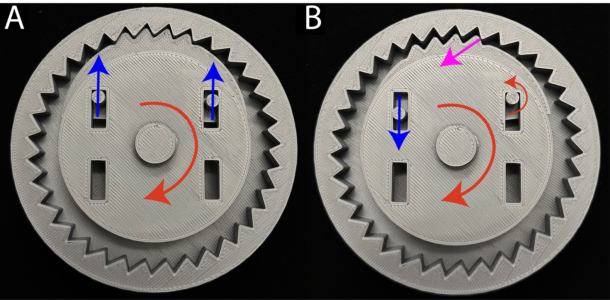
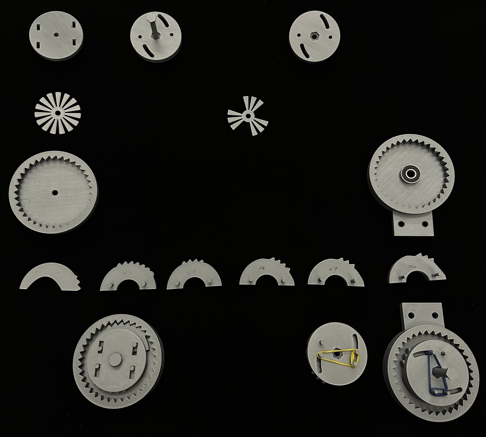

Centripetal Locking To Reduce Angular Acceleration of The Head During Impact
Introduction
During a blunt impact, both linear and angular acceleration is introduced to the head. Depending on where the impact occurs, the head can rotate at an accelerated speed and the neck will not be able to compensate for the force. Injuries can occur within the neck region, which is not usually considered when imagining an impact directly on the head. Numerous variables can contribute to a concussion such as shearing, loading of the skull, brain deformation etc. The problems caused by angular acceleration should be examined thoroughly. A centripetal locking mechanism was developed to actuate a certain angular acceleration due to centripetal forces to prevent the head from rotating any further. This was attached to a wire which ran through a system of 3D-printed parts to the side of a helmet. The force vector acts perpendicular to the impact, reducing the angular acceleration of the head and neck would decrease the injuries that a person receives exponentially.
-
1.
Theory
2. Methodology
3. Design
-
3.1
Back Mount
3.2 Centripetal Lock
5. Discussion
6. Future Improvements
7. Conclusion
1. Theory
Research conducted by Rowan and others published in 2012 used accelerometers on 355 football players and observed the impacts on the head during games. They were able to record more than 300,000 subconcussive and 57 concussive impacts. They state that an angular velocity of 28.3 rad/s and an angular acceleration of 6383 rad/s2 could lead to a 50% chance of a concussion. The subconcussive threshold velocity and acceleration were established to be 5.5 rad/s and 1230 rad/s2, respectively. Using linear regression lines that measured the impact of concussions, they were able to calculate the appropriate constant for the risk equation below $$ Risk = {1 \over 1 + e^{-(\alpha + \beta x)}} \tag{1} \label{riskeq} $$ where α = −12.531 and β = 0.002 (Rowson et al. 2012).
Hence, any acceleration removed from the body will reduce the risk of injury by an exponential amount. The question to answer is how to lower the acceleration of the head after a certain critical value is reached. One solution is a centripetal locking mechanism, which is a system that locks when a specific angular acceleration is achieved. If one were to attach this mechanism to the head and constrain it from accelerating past a certain threshold, it could save a person from receiving a concussion and ultimately, long-term brain damage. This system is most commonly used in seat belts in cars.
In seat belts, the force is transmitted through the belt onto the locking mechanism which is attached to the car. When the lock is activated, both the human and the object are connected to one singular body. Now imagine that this mechanism is attached to the head and connected to the body. Before the impact, we can use Newton’s second law of motion for rotational bodies which can be represented as $$ \tau = I\alpha \tag{2} $$
Where τ is the torque, I is the rotational inertia, and α is the angular acceleration. The angular acceleration is unknown as impacts are unavoidable, hence this cannot be changed and should be used as a given. Therefore, to reduce the total angular acceleration on the head we must increase I. If the mechanism performs correctly, then when an object hits the side of the face, the lock should instantly stop the head from accelerating past a specific value. This lock will be connected to the body and the total mass will increase which will consequently increase I. To represent this more clearly, first start with the torque introduced by the initial impact. $$ \tau_{initial} = I_{initial}\alpha_{initial} \tag{3} $$
To reduce angular acceleration we must add a larger I value as stated above, we do this by introducing the rest of the body, not just the head, to the equation because adding mass will result in a much higher rotational inertia. The torque does not change because it was initiated during impact and stays constant during the rotation of the head. Hence, the above equation becomes as follows. $$ \tau_{initial} = I_{final}\alpha_{final} \tag{3} $$ $$ \tau_{initial} = \tau_{final} \rightarrow I_{initial}\alpha_{initial} = I_{final}\alpha_{final} \tag{4} $$
For this equation to be true given that \(I_{final}>I_{initial}\), then final must be smaller than \(\alpha_{initial}\). Thus reducing the angular acceleration of the rotating body and preventing damaging forces to the head and neck. If the force vector was pointing perpendicular to the rotation, it will provide the most torque to counteract the rotation due to the impact. A single wire was first tested, then two to ensure that the wire will be sufficient to stop rotation directions of impact.
2. Methodology
Proceeding to use a software helped the accuracy improve. Uploading around 100 images to the software, it took around two hours to process. However, the models came out to be more detailed than what the app could produce. The diameter error was still in the range of 12.89%, which is still inaccurate for our standards. The extrusion error was less than a percentage, coming around 0.79%. Again, this could have been due to the fact that I use these smaller details to scale the entire model to the appropriate size. There are no limitations on how many images you can upload to the computer software, hence, having more images will increase accuracy. This, however, will increase the processing time considerably. 100 images took around 2 hours and 300 images took around 3.5 hours.
As for any experiment, consistency is key when testing different techniques during each trial. The dummy with just the torso and head was placed at a marked location in the lab with proper orientation of the lower body. Similarly, the head was rotated to a marked position. The back strap was mounted and a dark background was used in order to record footage of each test. A wire was hung from the ceiling to a professional soccer ball at 12 PSI. The ball’s height was adjusted to ensure that it would impact the head at the same location. The ball was then lifted to a height of 1.765 m and released so that it would follow the same path every single trial. Finally, a camera was placed to record the event at 240 FPS. After the initial setup was completed, the impact tests were conducted.
The purpose of this experiment was to test the feasibility of the centripetal locking mechanism. Thus, to prove that the concept is achievable and beneficial to a human, the tests done during this semester were only with taut wires and the mechanism itself was not tested.
Three tests were performed. Firstly, a control experiment had to be established as it provided the means for comparison on the upper and lower levels of how effective the invention was at reducing angular acceleration. The dummy was exposed to a blunt impact without any constraints from the back mount. This was considered the maximum acceleration during this experiment. Next, a single wire was attached to the side where the impact occurred. The wire was attached to the side of the helmet and guided towards the back of the mount where it was kept taut. Then two wires were placed opposing one another. The accelerometer readings were recorded using Blue Trident Sensors. Two sensors were located on the right and left side of the head, and one was located in the back. With this layout, the data could be evaluated for the two largest rotation vectors for the head. Additionally, the two sensors on both sides of the face served to compare and mitigate the errors arising from the accelerometer being close to the impact. This causes extra noise that could sway the results to a higher or lower value than what was actually observed. This is a similar approach to gathering the data just as the one discussed in (REF). The data was downloaded at both 1600 Hz for the raw linear acceleration and at 1125 Hz for the angular velocity.
3. Design
The prototyping and manufacturing of the parts were all created from scratch except for the helmet with the sensor housings. The helmet was created by Yang Wang, and some minor adjustments were made to create mounting holes for the wires to be placed. The main project of the research was to design and reengineer a centripetal locking mechanism. The second focus was to validate the theory that would prove that this device would be effective in reducing angular acceleration. All 3D printed parts were created in Solidworks© and printed using Prusa MK3S+ printers with PLA plastic (0.4 mm nozzle). Most of the parts were created with 15% infill to speed up the manufacturing process. Everything created was built around a human-centered design as one day a person would wear this device. Additionally, large parts had to be manufactured using a 20 cm by 20 cm printing area, so unique designs that revolved around part attachments had to be considered. Every piece was designed so that it could be adjustable if a different height, length, etc. was required without the need to print an entirely new part.
3.1 Back Mount
In order to increase I, the forces have to transmit to the entire body. Therefore, a back mounting area was required in order to attach the arms of the wire guides and the centripetal locking mechanism. A rough outline of a person’s spinal path was taken and the plate with mounting holes was designed. Using 1/4 20 bolts as a default, cuts of the head were created so that the bolts would be flush on a person’s back, creating more comfort. Moreover, there were 1 in holes for the webbing to go through. This webbing would be crucial in keeping the system stationary during impact. Inspiration for the webbing design was taken from online sources such as the figure above. The webbing had two cross sections horizontally to keep it stationary from rotational movement and one vertical piece on each shoulder for height stability. There was a larger vertical section that increased the height of the plate so that another horizontal component could be attached. Finally, a segment that was pointing towards the front of the body was created. This rested slightly above the shoulders of the dummy and it provided the necessary holes so that the forces could be directed perpendicular from the head to the lower back.
3.2 Centripetal Lock
Another focus of this research was to create the centripetal locking system. Inspiration was first taken from a youtube video of a person dismantling one of the seat belt mechanisms. The very first idea was to create a part that would move tangentially to the force that was being applied just as the video describes. Gear teeth were created within a case alongside some other parts including the actual lock, rod, upper casing, and friction-reducing plate. The friction reducer referred to here is a small plate that sat between the lock and the casing. This plate had less surface area; hence, kinetic friction would be reduced and the lock would be more sensitive to acceleration. However, with the first prototype, the lock did not move tangentially and did not activate at all. Even with adjusting the size of the lock to be more front-heavy and relocating the center of mass towards the edge of the lock, it was still not sufficient for the forces to act tangentially in the (theta hat) direction. Since centripetal force is given by $$ F = {mv^2 \over r} \mathbf{\hat{r}} \tag{5} $$
The arms of the device had to be constrained to move in the \( \mathbf{\hat{r}} \) direction. The arms of the lock broke off due to rotational testing of the gear shapes and the indents of the arms are visible clearly in the pictures below.

The second prototype was created given version, V1. This was the first real assembled part with an increased arm radius of 2 mm from 1.25 mm. Axial stresses are given by the equation $$ \sigma_x = {My \over I} \tag{6} $$ where I is the moment of inertia of the cross-section of the shape, M is the maximum moment induced, and y is the distance from the neutral plane to a point on the cross section. For this example, y is the radius of the arm since it accounts for the highest amount of stress in the part. For a circle, I is \({\pi \over 4} C^4 \) where C is the radius of the cross-section. Increasing the radius by 0.75 mm decreased the original stress by roughly 75.59% this is because there is a decrease to the fourth power as you increase the radius.
Moreover, more teeth were included so that the lock would activate at a faster rate. This did not work as adding more teeth toward the edges of the lock would create torque in the system. During impact, the teeth would slide out as expected and the two arms would move radially outward. However, as the upper housing kept turning clockwise, the right arm would be forced to account for the reaction forces created by the force vector arising from the casing teeth impacting the lock. Thus, it turned into a pin joint which allowed for rotation. The location of the rotation axis would be adjusted. This would create a moment on the left arm of the lock and push it counterclockwise, releasing it from its locked position entirely. In attempting to solve this problem in the second model, the number of teeth was reduced, but the original problem still existed.
The solution was to force the desired arm to be a pin joint. This prevented that segment from moving down and solely provided rotation to the rest of the lock. The forces from the casing teeth provide external torque that pushes the lock counterclockwise which resists the movement of the rod which is moving clockwise. Version six was the first successful implementation of the centripetal locking mechanism. Additional changes included the removal of some wings on the plate and adding a hex pattern on the rod and upper casing. This hex pattern created a rod that could be pressure fitted, so that glue or tools were not required to assemble and disassemble the system. This made it possible to prototype many minor modifications of the lock.
The moment the arm issue was fixed, however, problems arose as the gear teeth shape had to be readjusted. During impact, the lock would stop the rod from rotating, but the lock would not be fully encapsulated in the gear cut. This was the reaction due to the normal forces acting normally on the contact surface. This normal vector was pointing closer to the center of rotation rather than the tangential vector. When the force and distance vector is perpendicular, this will yield the highest amount of rotation within the system. It was desirable to adjust the very tips of the teeth on the lock. Having a flatter approach rather than a curved one was beneficial in directing the force vector tangentially to create more torque.
The final adjustments to the mechanism were first adding a spring to unlock the system after the impact had passed. Instead of a conventional metal spring, a rubber band was used. This provided more adjustability as the pretension could be tuned for the desired level of force to radially pull back the lock. Adding a threaded screw so that the rubber band can be tied around it allowed for sensitivity adjustment. Tightening the screw and consequently adding more tension to the rubber band would increase the acceleration at which the lock would activate. Conversely, loosening the rubber band would allow it to be more sensitive. This final version of the locking mechanism was achieved after 13 iterations and adjustments.
4. Results
The project consisted of testing the theory of the centripetal locking mechanism. The data gathered from the impact tests are listed below. The magnitudes of linear acceleration and angular velocity were calculated using standard methods. $$ \overrightarrow{a} = \sqrt{a_x^2 + a_y^2 + a_z^2} \quad \text{and} \quad \overrightarrow{\omega} = \sqrt{\omega_x^2 + \omega_y^2 + \omega_z^2} \tag{7} $$ The following figures display what the raw data output looks like for all sensors.
Upon inspection, the data from each sensor sufficiently correlate during the trials. Thus, it ensures that the data gathered from the side of the impact in relation to the other sensors are still valid to use in the analysis. There was minimal noise in the data, as any spikes would have been noticed by the figure representations. Extracting the x, y, and z components of angular velocity from the sensors make it easier to analyze the data and affirm correlation. Gathering the magnitude and then computing the maximum values from each sensor, the data can be compiled into Tables 1-8, as shown below.
| Trial | Sensor 1 | Sensor 2 | Sensor 3 | Average |
|---|---|---|---|---|
| 1 | 17.87 | 17.58 | 16.76 | 17.40 |
| 2 | 16.87 | 16.65 | 16.83 | 17.20 |
| 3 | 17.83 | 16.85 | 16.91 | 17.20 |
| Trial | Sensor 1 | Sensor 2 | Sensor 3 | Average |
|---|---|---|---|---|
| 1 | 17.62 | 17.31 | 16.67 | 17.20 |
| 2 | 15.21 | 25.07 | 15.78 | 18.69 |
| 3 | 15.38 | 16.22 | 15.49 | 15.69 |
| Trial | Sensor 1 | Sensor 2 | Sensor 3 | Average |
|---|---|---|---|---|
| 1 | 14.10 | 14.53 | 14.87 | 14.50 |
| 2 | 15.61 | 15.50 | 15.71 | 15.61 |
| 3 | 13.46 | 13.94 | 14.33 | 13.91 |
| Trial | Sensor 1 | Sensor 2 | Sensor 3 | Average |
|---|---|---|---|---|
| 1 | 8.76 | 10.12 | 8.63 | 9.17 |
| 2 | 8.11 | 9.71 | 8.65 | 8.82 |
| 3 | 8.81 | 10.01 | 8.83 | 9.22 |
| Trial | Sensor 1 | Sensor 2 | Sensor 3 | Average |
|---|---|---|---|---|
| 1 | 302.48 | 296.27 | 484.76 | 361.17 |
| 2 | 232.39 | 276.20 | 493.32 | 364.30 |
| 3 | 254.33 | 277.30 | 495.84 | 342.49 |
| Trial | Sensor 1 | Sensor 2 | Sensor 3 | Average |
|---|---|---|---|---|
| 1 | 270.63 | 254.72 | 509.07 | 344.81 |
| 2 | 705.85 | 312.79 | 604.70 | 541.11 |
| 3 | 413.82 | 229.67 | 487.10 | 376.63 |
| Trial | Sensor 1 | Sensor 2 | Sensor 3 | Average |
|---|---|---|---|---|
| 1 | 298.07 | 241.42 | 493.87 | 344.45 |
| 2 | 336.92 | 180.13 | 424.73 | 313.93 |
| 3 | 320.38 | 160.50 | 388.87 | 289.92 |
| Trial | Sensor 1 | Sensor 2 | Sensor 3 | Average |
|---|---|---|---|---|
| 1 | 293.68 | 194.22 | 410.23 | 299.37 |
| 2 | 268.95 | 199.13 | 347.76 | 271.95 |
| 3 | 271.85 | 204.28 | 340.33 | 272.15 |
5. Discussion
Gathering data from three locations on the head and extracting the angular velocity and linear acceleration, the data supports the idea of a centripetal locking mechanism. Firstly, the angular velocity of the control trials was theorized to have the highest values as it had the least number of forces attempting to stop the impact from increasing the velocity. This was not true, as the single wire attached to the head achieved the highest angular velocity. This was surprising as it should have reduced the angular velocity due to the perpendicular force preventing it from rotating. The issue became apparent when inspecting the video after the impact, as it created a moment on the head and pulled it back at an accelerated rate. This contributed to a higher impulse and, consequently, a higher velocity and acceleration reading. The linear acceleration readings were also higher than the control and inconsistent from trial to trial. This is specifically due to the fact that the single wire did not maneuver the head in the same path every trial. Hence the acceleration readings varied depending on how the head rotated back due to whiplash.
The two wires did much better in reducing the angular velocity as they had the ability to stabilize the head in both directions by eliminating any possibility of the head moving towards the chest or back. The second wire was theoretically able to absorb half of the force presented by the ball during impact. When taking the average angular velocity during the control trials and comparing them to the averages obtained from the double wire impacts, there is a noticeable decrease in values. The angular velocity average for the control trial was 17.13 rad/s, while the double wire trials averaged out to be 14.30 rad/s. This was a reduction of 18.00%, which is amazing considering that this could theoretically be the difference between a minor or major concussion, depending on the impact. This, however, is still significantly off from the theoretical minimum of 9.07 rad/s, which is almost another 42.94% difference.
That being said, the acceleration results were more prominent in indicating the acceleration forces on the head during impact. The control experiment had an average linear acceleration of 355.99 m/s^2, while the double wire had a value of 316.10 m/s^2, which is an 11.87% decrease. This measurement is more valuable because force can be directly calculated using these values. The absolute minimum acceleration was calculated to be around 281.16 m/s^2. The completely constrained experiment is only an 11.70% improvement from the ones conducted with two wires. The idea of having a single wire must be eradicated as it would result in larger acceleration and an increased neck strain. Hence, a mechanism that simultaneously stops both wires during impact must be developed to reduce the risk of further damage to the head and neck. Though angular acceleration was not computed due to the rotation vector constantly changing through time and space, the peak acceleration gathered from the data is sufficient to indicate whether or not the mechanism was able to reduce linear acceleration. Since angular and linear acceleration are related by a factor of radius, it is fair to assume that this decreased angular acceleration by the same factor.
6. Future Improvements
The next steps moving forward would be to first connect a proper wire or threaded string to the centripetal locking mechanism. As stated above, the steel wiring has the lowest elongation; however, the memory of steel made it impossible to wrap it around the eight-millimeter shaft for rotation. A possible solution would be to use kevlar as it has similar strength and lower weight, but a higher elongation during stress testing (Horn et al. 1977). This should not be important during the material selection as the force being loaded onto the wire is negligible. Furthermore, pre-tensioning the power spring to the proper torque so that it eliminates any slack on the line is mandatory. Finally, the centripetal lock will be integrated into the back, and further impact tests will be conducted.
During the testing process, multiple flaws arose that could be problematic if someone were to wear it. The weight of the entire system was concerning as it can be quite heavy for someone to wear. If the previous adjustments yield promising results just as before, then progress towards making the locking mechanism and entire back mounting area could be sized down. The purpose of making everything thicker and larger was to test the theory and have enough margins to adjust the equipment due to tolerances and material deformations. Moreover, the mechanism will have to be attached to a gear system so that one centripetal lock can control both wires so that they can be stopped together and prevent any whiplash from occurring.
Additionally, this system is only designed for side impacts and is not suitable for projectiles impacting the front or back of the head. The development of a better system will also be designed for a dummy with all body parts attached as it would represent a real human being. This would also reduce the angular acceleration even more as it would introduce more mass into the system.
Testing at what acceleration would the lock activate would also be valuable information. Tuning the lock to actuate at a desired angular acceleration would prevent the lock from acuating too soon or too late. This can also be fine-tuned when more research about the angular acceleration of the head is published and more modifications can be made to the design.
Lastly, this device is not friendly for a human to wear, hence, parts will have to be shrunk and materials will have to be lighter. The implementation of the perpendicular force vector without the wire guides extruding away from the body will be difficult, but not impossible. The wire can be put into sleeves and guided down the neck to the shoulders where it will be guided toward the locking mechanism.
7. Conclusion
The entirety of the project is to transmit forces that would cause rotational energy from the head to the body. The centripetal locking mechanism was designed successfully and will be implemented in the back mount during later testing. To test the theory, one and two wires were attached to the helmet, perpendicular to the impact. This was to simulate the lock activating and creating tension through the wires. The results validate that a locking system can be utilized to decrease angular acceleration during side impacts. With the success of creating the lock and validating the theory, more experiments can be conducted to completely integrate the two projects together. Applications that could utilize this method of protection would be military exercises or during athletic play. It allows for full head mobility while still offering protection against strain and helps save people from long-term brain injuries when implemented properly.